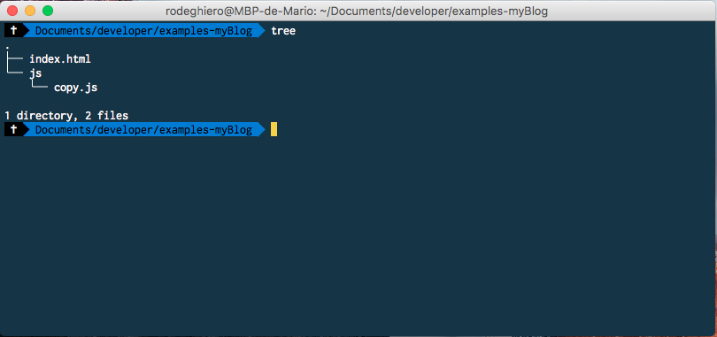

Autor: MárioRodeghiero
Autor: MárioRodeghiero
Date: 09/10/2017
CopyRight Automático
"Atualizar data do CopyRight de forma automatica"
Minha ideia é colocar em pratica, tudo que aprendo através de livros, vídeos e cursos. Espero que este post seja o primeiro,
entre vários outros que estão por vir. Seja sobre html, css, JS ou qualquer outra linguagem e que eu possa ajudar,
repassando conhecimento que adquiri durante meu estudos.
Agora deu de blá-blá-blá e Bora lá! Vamos falar sobre o objetivo do post “Atualizar data do CopyRight de forma automatica”.
Estrutura de arquivos
Caso alguém tenha duvida sobre a estrutura de arquivos utilizada, segue a saída do comando “tree”, aplicado no terminal do computador.
Código HTML
Para exiber o copyright, criei um arquivo chamado “index.html” na pasta raiz(exemples-myBlog) e logo abaixo da tag ”body”,
foi criada a tag “footer” e inserido o id="copy", assim, vamos conseguir utilizar o id em nosso código javascript.
Para realizar a chamada do nosso arquivo javascript, criamos a tag “script” e inserimos o src="js/copy.js".
<html>
<body>
<footer id="copy">
<footer>
<script src="js/copy.js"><script>
</body>
</html>
Código JS
A primeira coisa a ser feita no código javascript, é criar um novo objeto “Date()” e vamos armazenar na variavel "date". Fizemos isso, porque “Date()” nos retorna uma informação muito completa, algo parecido com isso: “Mon Oct 09 2017 15:27:03 GMT-0300 (-03)”. Como queremos exibir apenas o ano em nosso copyright, vamos criar a variável “year” para pegar somente o ano do nosso objeto, passando “date.getFullYear()”. Agora é só realizarmos o básico, vamos buscar o elemento com id="copy" e depois utilizar o “innerHTML” para apresentar o ano em nossa pagina de exemplo.
let date = new Date();
let year = date.getFullYear();
let copyRight = document.getElementById('copy');
copyRight.innerHTML = '<p>Copyright ©'+ year +'</p>';
Thanks!!!